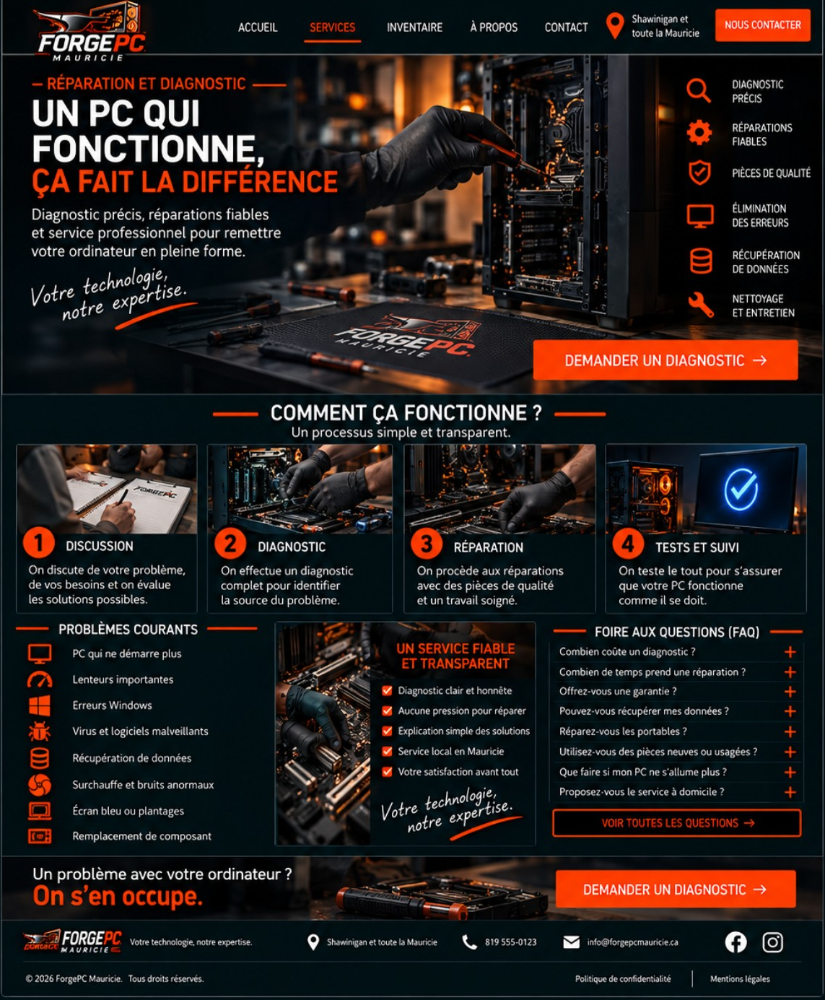
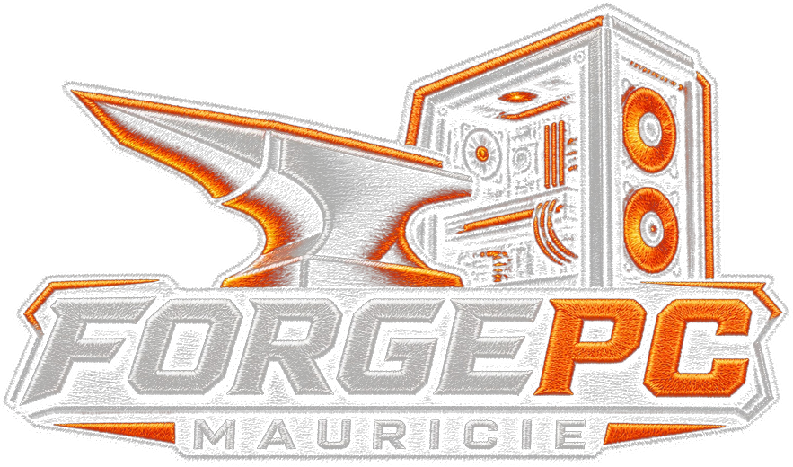
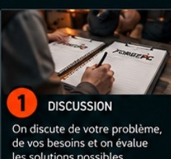
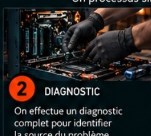
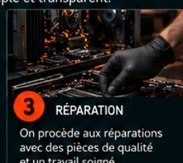
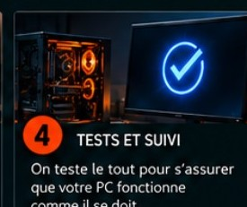

Diagnostic précis, réparations fiables et service professionnel pour remettre votre ordinateur en pleine forme.
Un processus simple et transparent.

On discute de votre problème, de vos besoins et on évalue les solutions.

On effectue un diagnostic complet pour identifier la source du problème.

On procède aux réparations avec des pièces de qualité.

On teste le tout pour s’assurer que votre PC fonctionne comme il se doit.
Un problème avec votre ordinateur ?